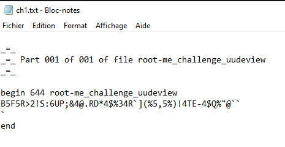
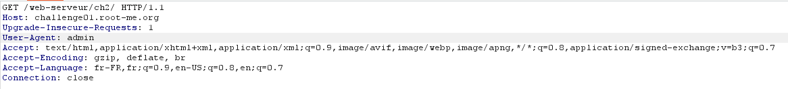
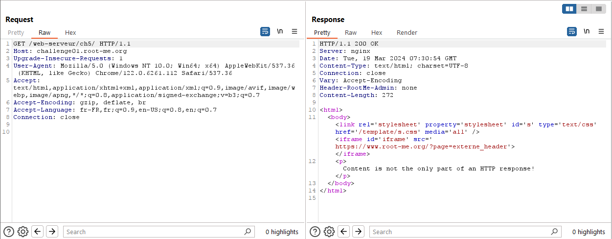

Énoncé
Décoder la chaîne.
On vas sur dcode
Énoncé
Retrouver le mot de passe de validation.

On vas sur dcode
Énoncé
Un échange authentifié de fichier réalisé grâce au protocole FTP. Retrouvez le mot de passe utilisé par l’utilisateur.
On suis le flux TCP
Le mdp est afficher en claire
Énoncé
Ce formulaire est désactivé et ne peut pas être utilisé. À vous de trouver le moyen de l’utiliser tout de même.
On inspect la page
On remplace desabled par enabled
On rentre quelque chose
Énoncé
Yuni ! Yuni !
On inspect la page
On vas sur dcode
Énoncé
On vas sur Burp
On change le User-agent

Énoncé
On vas sur Burp

On change le 'none' par 'yes'
Énoncé
Pour commencer cette épreuve utilisant le protocole TCP, vous devez vous connecter à un programme sur une socket réseau.
Vous devez calculer la racine carrée du nombre n°1 et multiplier le résultat obtenu par le nombre n°2.
Vous devez ensuite arrondir à deux chiffres après la virgule le résultat obtenu.
Vous avez 2 secondes pour envoyer la bonne réponse à partir du moment où le programme vous envoie le calcul.
La réponse doit être envoyée sous la forme de int ou float
Paramètres de connexion au challenge
Hôte: challenge01.root-me.org
Protocole: TCP
Port: 52002